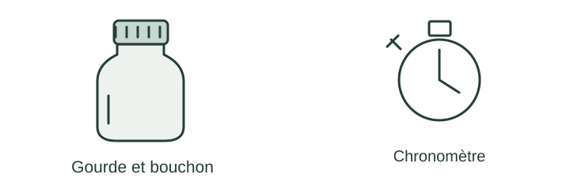

OBSERVER · EXPÉRIMENTER · EXPLIQUER
Une gourde pour tous
Les temps d’ouverture varient selon la prise et la personne. Observe les essais un par un.

✎ Garde ta feuille à côté de toi.Prévois sur papier → manipule → observe → rédige sur papier.
Des observations pour expliquer
- Q2 : compare chaque temps à la règle du club.
- Q3 : précise ce qui reste identique dans un essai ; Q4 : dessine ton amélioration.
Appuie ton explication sur une valeur, un changement observé ou une comparaison. Distingue ce que montre le modèle et ce qui reste à vérifier.